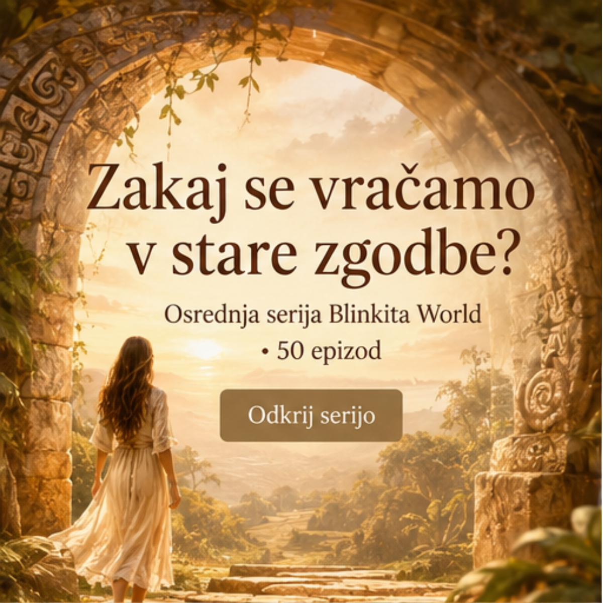
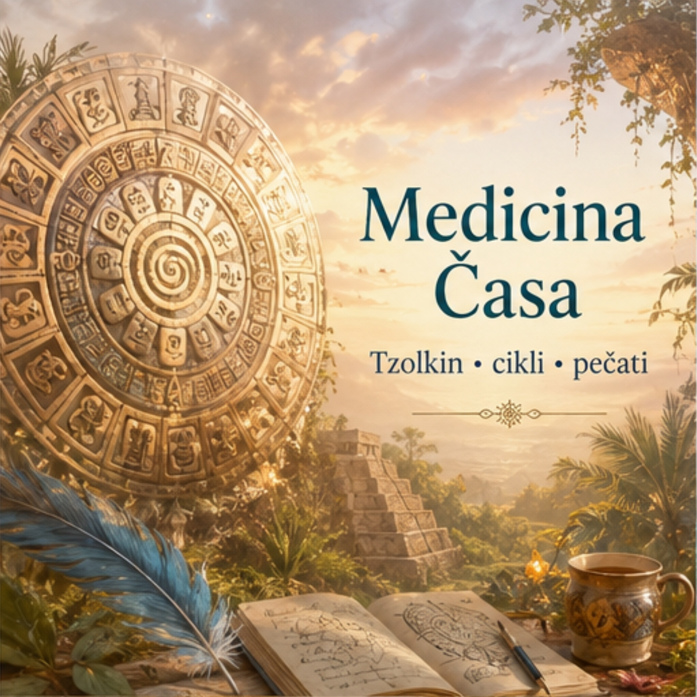
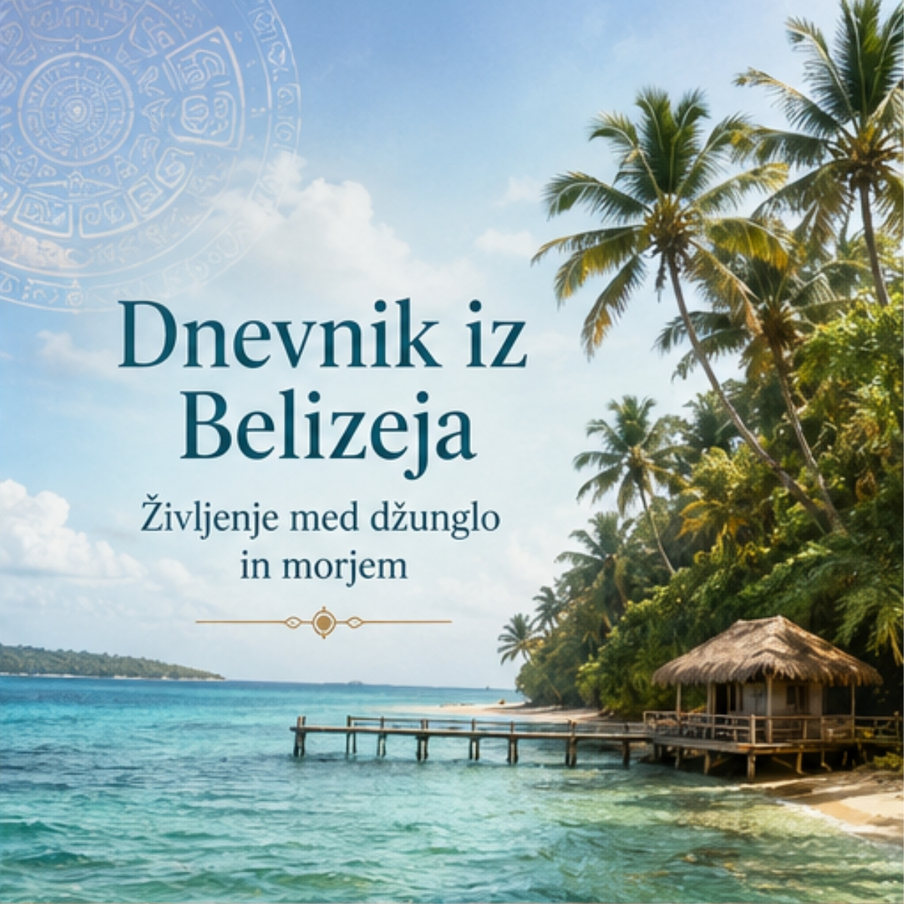
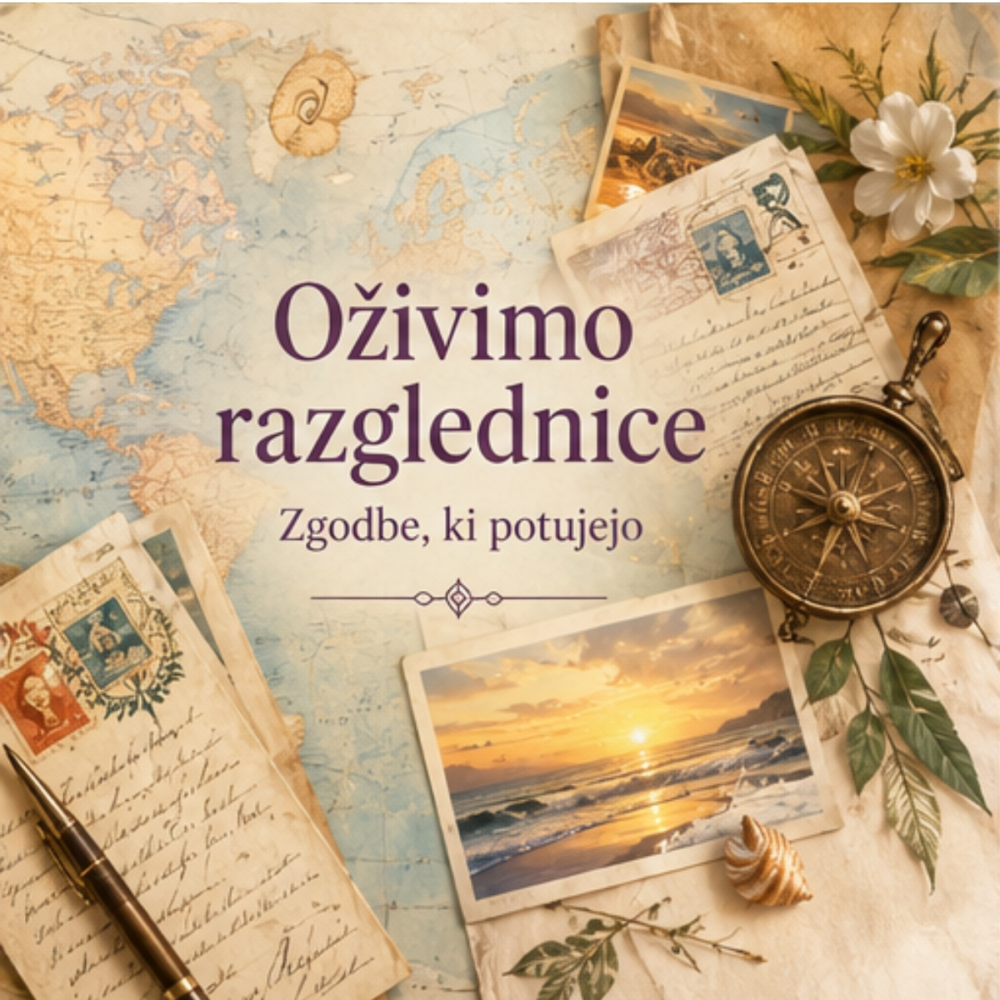
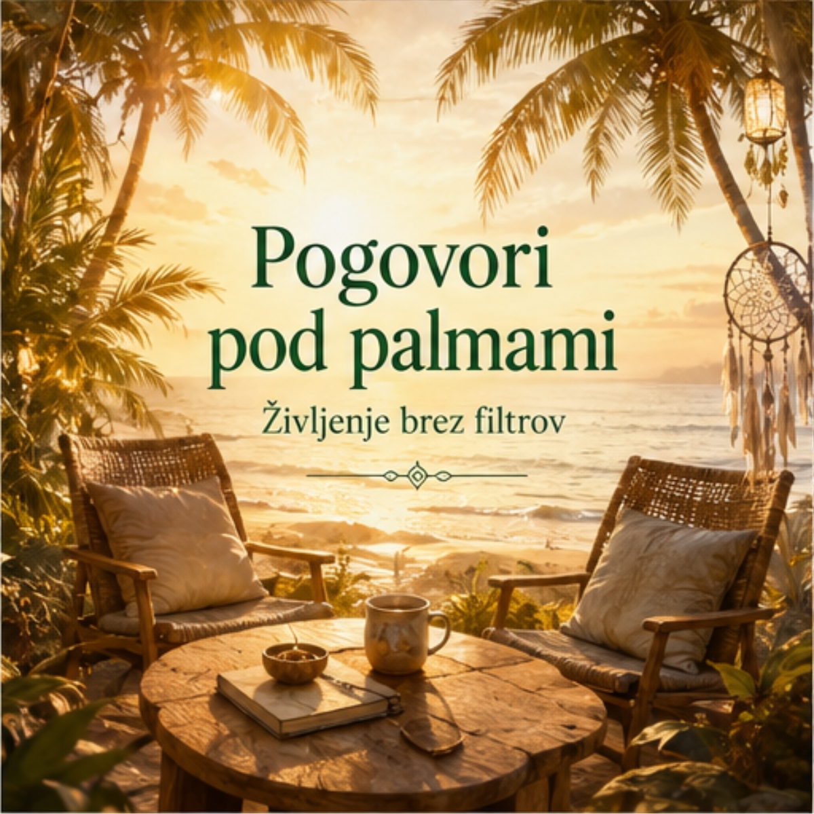
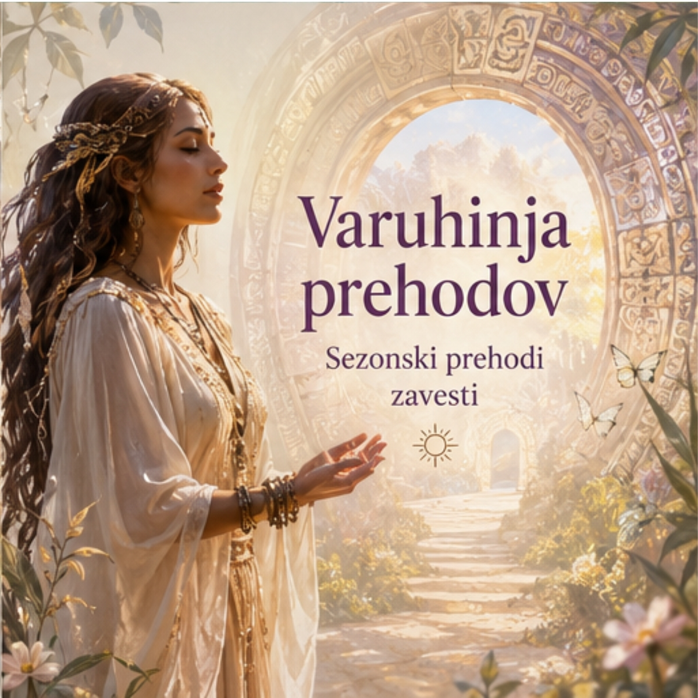

TZOLKIN PORTAL DNEVA
KODA ČASA
Blinkita TV
Zgodbe o času. Identiteti. Prehodih. In življenju, ki ga ne živimo enkrat, ampak ga prepoznamo vedno znova.
To ni kanal. To je arhiv živih trenutkov.
Belize. Morje. Džungla. Veter. Papirnata razglednica.
Tvoje beležke, ki postanejo vrata.
Vsaka epizoda je vprašanje, ki te že pozna.


Tzolkin • cikli • pečati
Izšla: Junij 2026
Življenje med džunglo in morjem
Začetek: Julij 2026
Zgodbe, ki potujejo
Zaživelo: Junij 2026
Življenje brez filtrov
Začetek: Julij 2026
Sezonski prehodi zavesti
Začetek: Avgust 202650 epizod • 5 ciklov • ena ponavljajoča se inteligenca življenja
Vsaka epizoda odpira isti vzorec v drugi maski.
Ne gre za nove zgodbe. Gre za iste zgodbe, ki postanejo vidne.
Življenje se ne ponavlja — razkriva se skozi ponavljanje.
▶ Vstopi v serijo... kmalu... september 2026